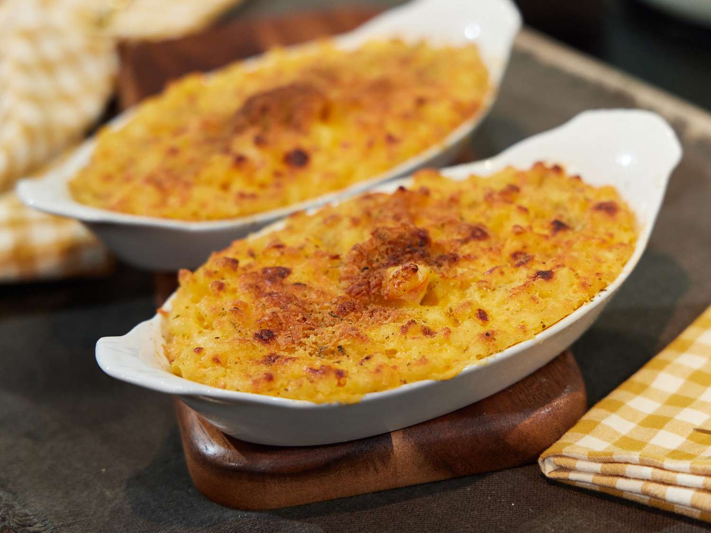

Mac and Cheese

Phyllis's Homemade Baked Mac & Cheese
Ingredients
- 4 tablespoons butter, divided
- 2 cups whole milk, or as needed
- 3 tablespoons all-purpose flour
- 24 ounces extra-sharp yellow Cheddar cheese, cubed
- 16 ounces sharp Cheddar cheese, cubed
- 2 pounds elbow macaroni
- 2 large eggs, beaten
- salt and freshly ground black pepper to taste
- 2 pounds shredded sharp Cheddar cheese
- 1/2 cup seasoned breadcrumbs (optional)
Steps
- Preheat the oven to 350 degrees F. Grease a large casserole dish.
- Melt 2 tablespoons butter in a saucepan over medium heat. Add milk,
bring to a simmer, then reduce heat to low. Mix flour with 2 to 3
tablespoons water until smooth. Add flour mixture to the saucepan,
stirring constantly, and cook until sauce thickens. Add cubed
extra-sharp Cheddar and cubed sharp Cheddar cheese, stirring until
cheese melts. Remove from heat.
- Meanwhile, bring a large pot of salted water to a boil, and cook
elbow macaroni until al dente (tender with a bite), about 8 minutes,
or according to package instructions. Drain and set aside.
- Melt remaining 2 tablespoons butter in a microwave-safe bowl on
High, about 10 seconds. In a large bowl, combine elbow macaroni,
melted butter, and eggs. Stir in cheese sauce; adding a little
more milk if the sauce seems too thick. Season with salt and pepper.
- Pour macaroni and cheese into the prepared casserole dish. Top
with shredded cheese and seasoned breadcrumbs.
- Bake in the preheated oven until golden-brown and bubbling, 35
to 45 minutes.
Source
Home